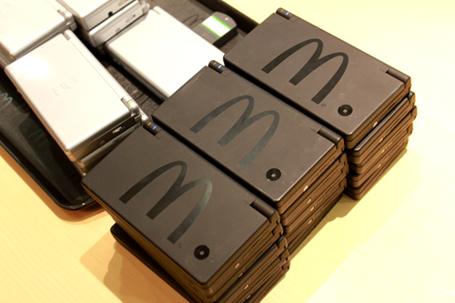

Home
eCDP
eSmart 2.0
DS Mac Adventure
DS De Mac
The McDonald's DS
The McDonald's DS
The McDonald's DS was a black DSi with a McDonald's logo on the top. This DS seemed to be packaged with the eCDP game but seem to be exactly the same as a regular ds besides the custom shell

The Black McDonald's DSi - Source:
http://www.taikenreview.com/event/mac-ds.html
The Black McDonald's DSi Unboxing